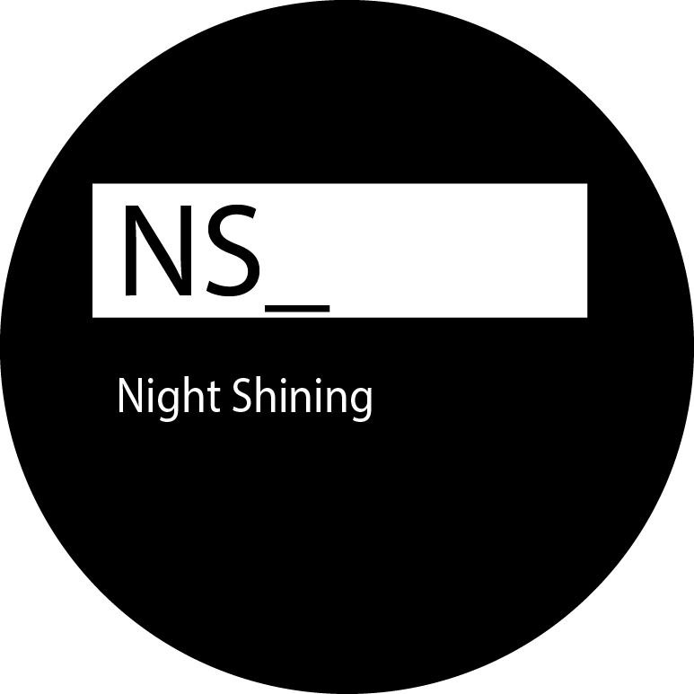

_Bio: M. Romeo is a musician, interactive sound designer, and digital artist living and working in New York. He has written, produced, and released music, multimedia artworks, and creative software for the last several years under the moniker 'Night Shining'. His performances include live manipulated audio and visual elements running with custom built software. This web app is an interactive album that allows the user to shuffle the entire mix. It generates movement through algorithmically assigning each sound positioning, coloring of tone, fader level and more to create a dynamic audio field of constantly generating music. Stream the official digital release now on SoundCloud
